Як створити комерційну пропозицію в калькуляторі
Покрокова інструкція для дилерів — від входу в портал до збереження готового КП у PDF. Кожен крок зі скріном реального екрана й підписами, що саме натискати.
Вхід у портал
Відкрийте сторінку входу в партнерський портал і введіть свій логін.
- Email — той, що вам видали при підключенні.
- Пароль.
- Натисніть «Увійти».
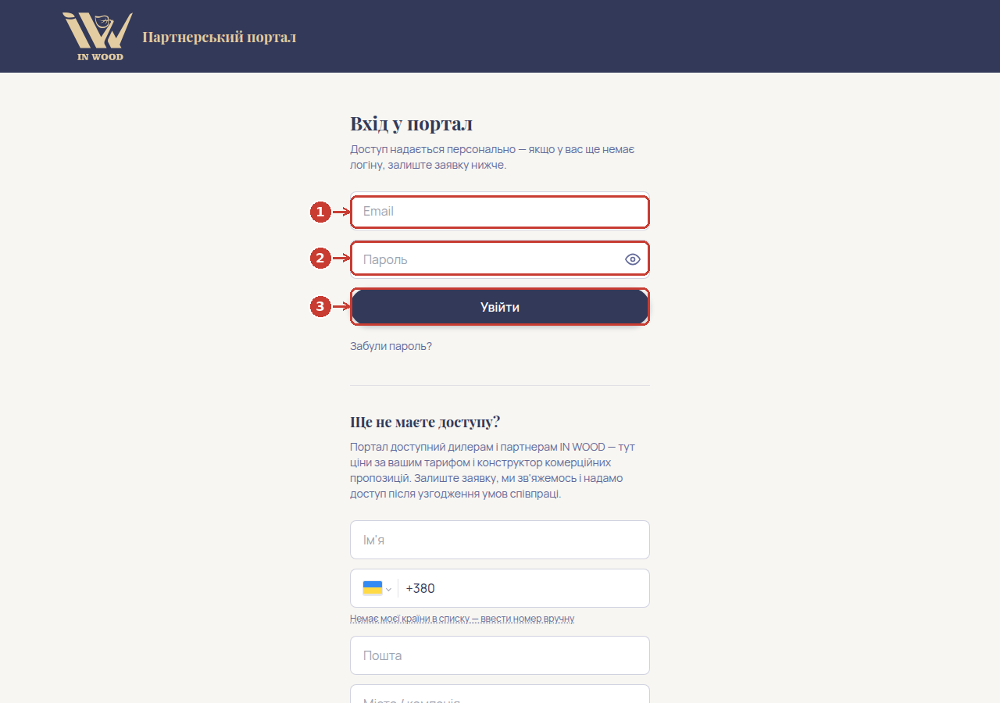
Забули пароль — на цій же сторінці є посилання «Забули пароль?».
Кабінет — де знайти калькулятор
Після входу відкриється ваш кабінет. Зверху, в меню, натисніть «Комерційна пропозиція» — це і є калькулятор для створення КП.
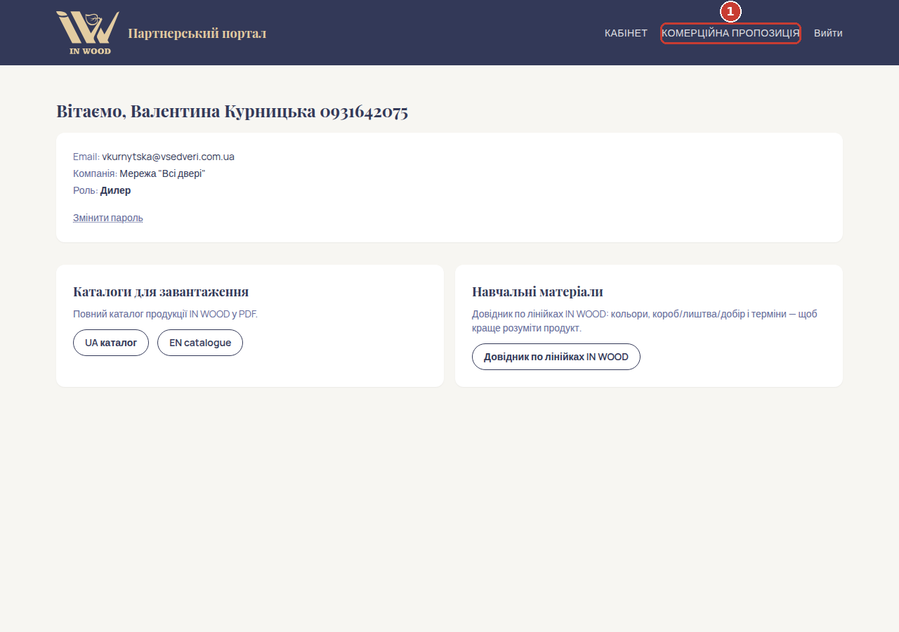
Як влаштований калькулятор
Перш ніж заповнювати — коротко про те, що є на екрані:
- Панель мови й валюти — переключити весь калькулятор на англійську та/або перерахувати ціни в EUR/USD (про це нижче, кроки 8–9).
- «Клієнт і тариф» — ім'я й телефон клієнта, для кого робите пропозицію.
- «Додати позицію» — тут обираєте модель, колір, розмір і все комплектуючі для однієї позиції КП.
- Таблиця справа — сюди потрапляють усі додані позиції, тут же підсумкова сума.
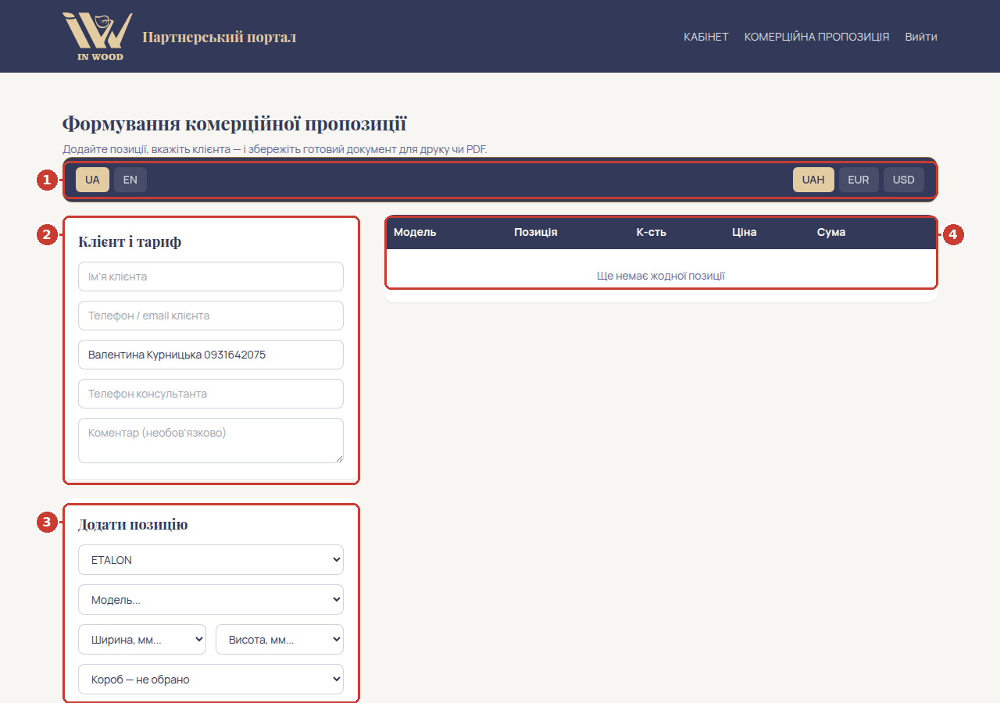
Клієнт
Впишіть ім'я та телефон (або email) клієнта, для якого формуєте пропозицію. Поле тарифу вже стоїть за вашою роллю — міняти його не потрібно.
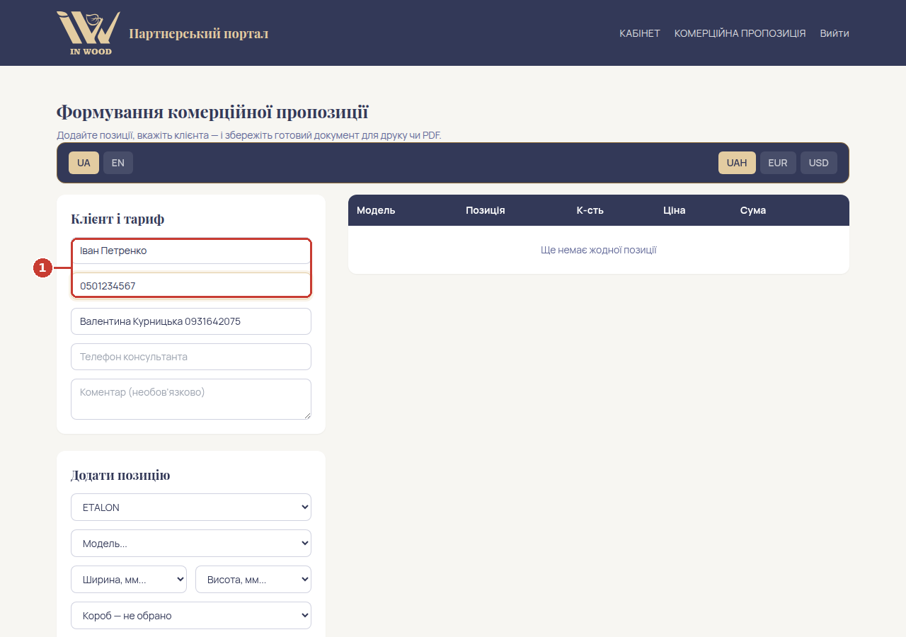
Поля «Телефон консультанта» і «Коментар» — необов'язкові, заповнюйте за потреби.
Модель, колір і розмір дверей
У блоці «Додати позицію» оберіть лінію дверей (ETALON, NOMINAL, FREZZATTI, PERFETTO тощо) — вона вже стоїть першою в списку. Далі по черзі:
- Модель — код конкретних дверей (напр. ET-01).
- Колір — із палітри доступних для цієї моделі плівок.
- Ширина і висота — зі стандартного ряду розмірів.
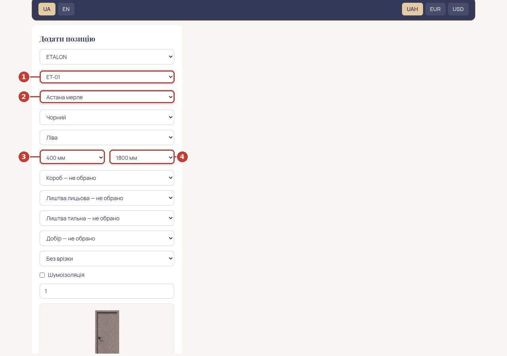
Комплектуючі, врізка, кількість
Нижче йдуть короб, лиштва лицьова й тильна, добір — обираються так само зі списку, як і колір. Усі чотири поля — повністю незалежні одне від одного: можна обрати тільки лицьову лиштву без тильної, тільки короб без добору, чи взагалі нічого з цього — що не потрібно для цього замовлення, лишайте «не обрано». Далі:
- Врізка — без врізки / під замок / повна врізка фурнітури.
- Шумоізоляція — галочка, якщо потрібна (лінія ETALON).
- Кількість — скільки таких дверей потрібно клієнту.
Під формою одразу видно фото обраних дверей і розбивку ціни по кожній складовій — звіряйте з тим, що просить клієнт, ще до того, як додати позицію.
Додавання позиції й підсумок
Коли все обрано — кнопка «Додати позицію» стає активною. Натисніть її: рядок переходить у таблицю справа, і можна одразу додавати наступну позицію (інша модель чи колір) тим самим способом.
- Позиція з повною розбивкою ціни по кожній складовій.
- «Видалити» — прибрати позицію, якщо помилились.
- Знижка — у відсотках або в гривнях, якщо домовились з клієнтом.
- Підсумкова сума по всьому КП.
- Три кнопки збереження — про них у кроці 10.
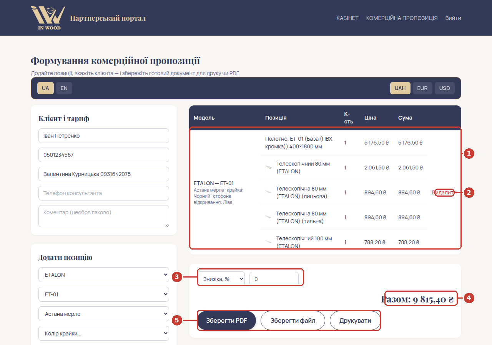
Переклад на англійську
Якщо клієнт — іноземний, натисніть EN у панелі зверху: весь екран (назви, кнопки, таблиця) одразу перемикається на англійську, не лише друкований бланк.
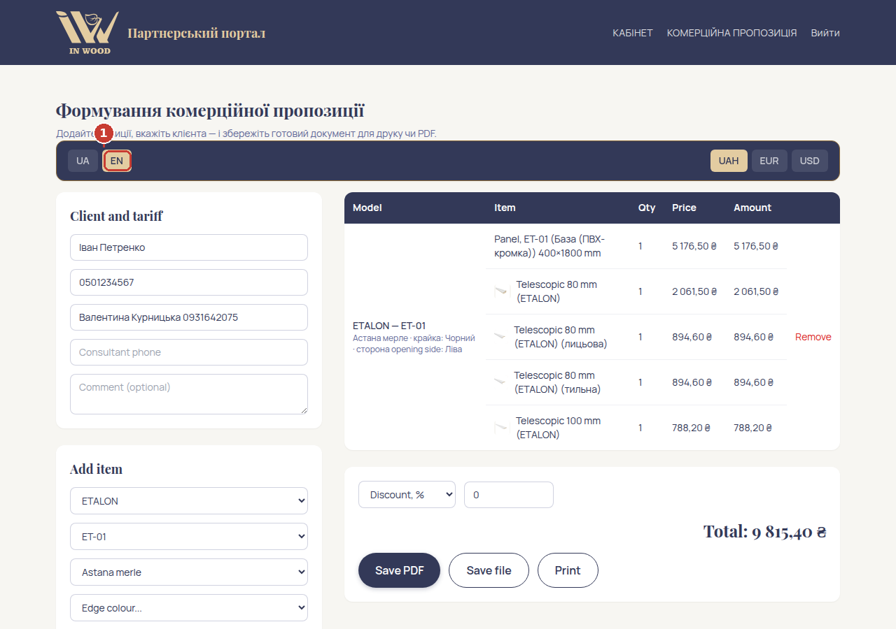
Повернутись назад — та сама кнопка, тільки UA.
Перерахунок у валюту
Поруч, справа — вибір валюти: UAH / EUR / USD. Оберіть EUR або USD, впишіть курс у полі праворуч — усі ціни в таблиці й підсумок одразу перерахуються.
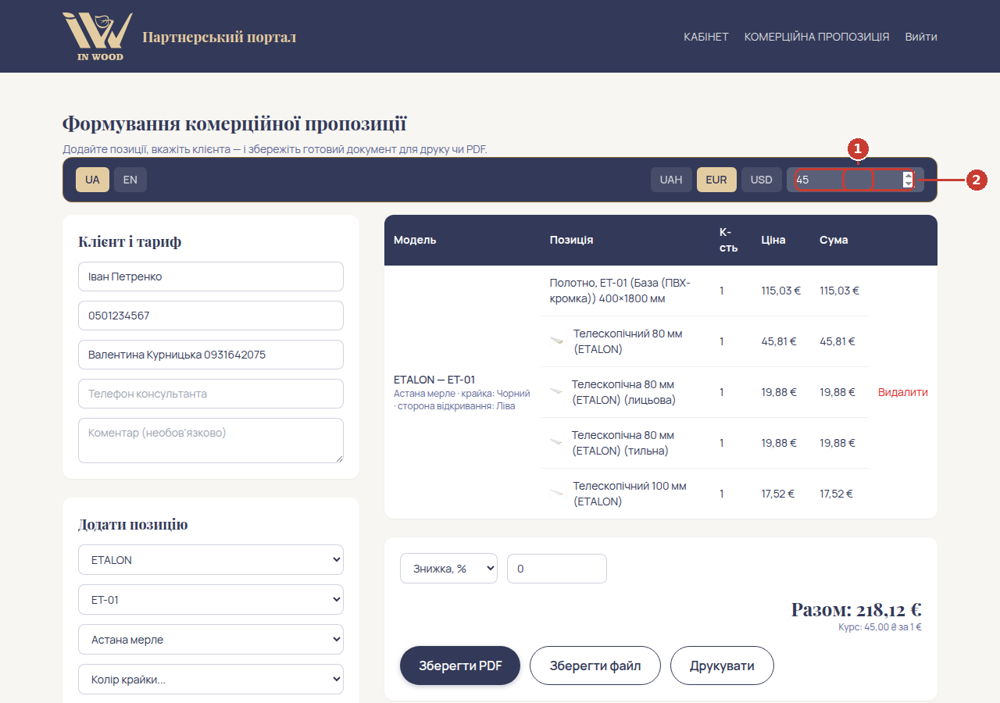
Збереження й друк
Коли КП готове, під підсумковою сумою — три кнопки:
- Зберегти PDF — одразу скачує готовий файл, найзручніше для надсилання клієнту.
- Зберегти файл — альтернативний варіант збереження документа.
- Друкувати — відкриває діалог друку, якщо потрібно роздрукувати одразу.
Все, комерційна пропозиція готова.
Окремо: короб, лиштва чи добір без полотна
Якщо клієнту потрібен лише короб, лиштва чи добір без дверей — не шукайте це серед моделей. У верхньому селекті «Лінія» оберіть пункт «Погонажні вироби (короб/лиштва/добір окремо)» — з'явиться окрема, коротша форма:
- Лінія — з якої колекції потрібен виріб (ETALON, NOMINAL тощо).
- Тип — короб, лиштва чи добір.
- Позиція — конкретний виріб зі списку.
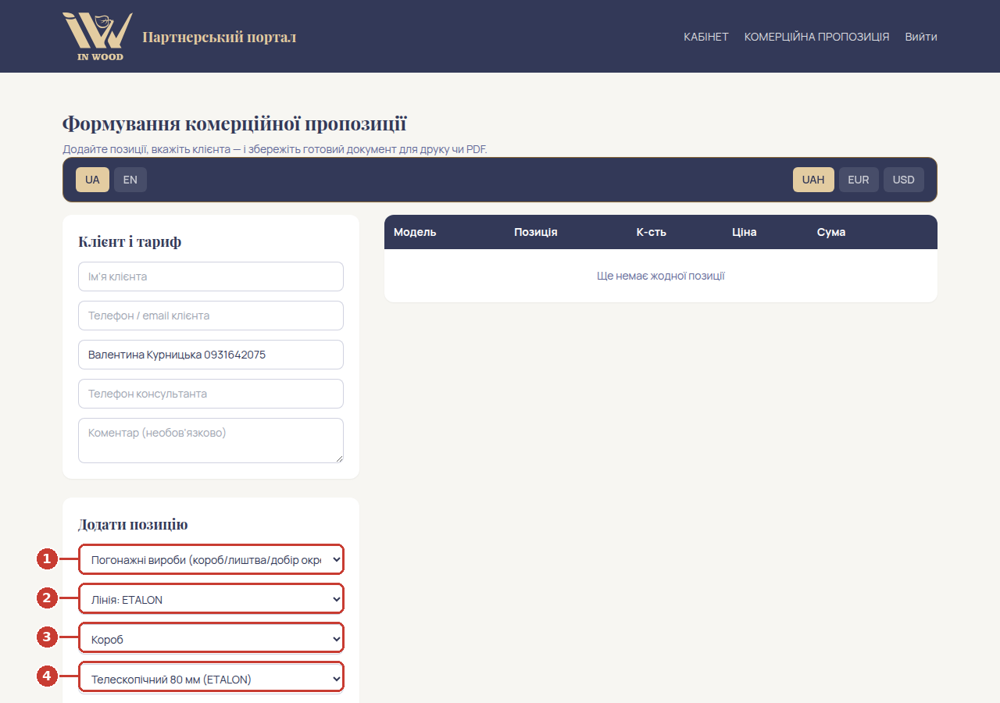
Додається в таблицю так само кнопкою «Додати позицію» — ціна й кількість працюють ідентично до звичайної позиції.
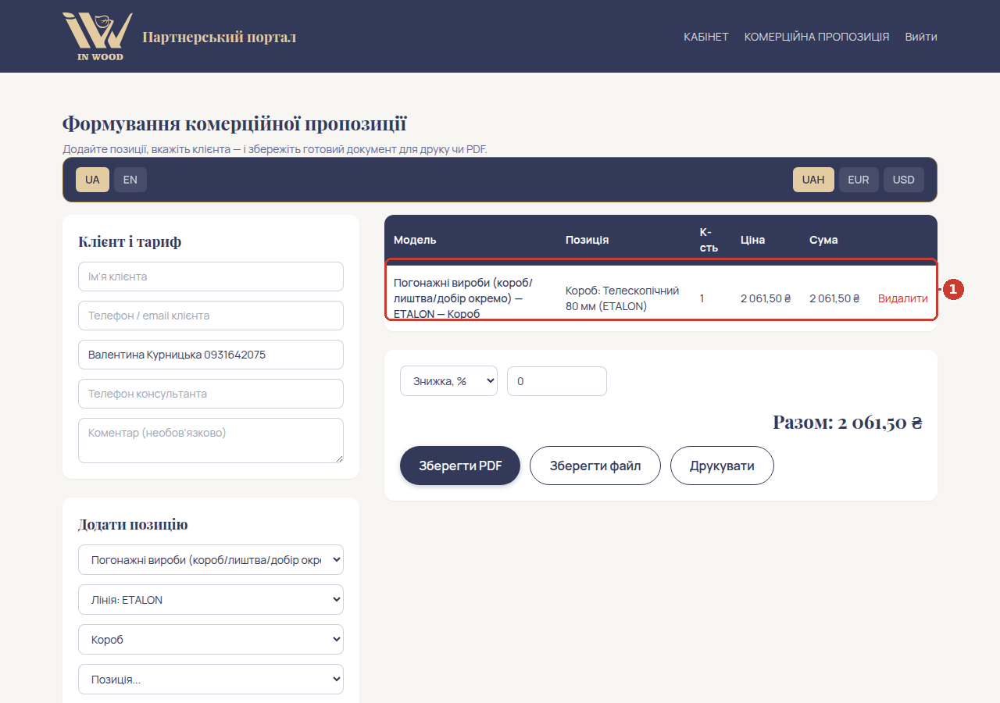
Окремо: фурнітура (ручки, завіси, замки тощо)
Так само в селекті «Лінія» — оберіть потрібний бренд фурнітури («Фурнітура MVM», «Фурнітура Anselmi + AGB» тощо). Далі:
- Категорія — ручки, завіси, замки, упори, механізми тощо.
- Артикул — конкретна позиція; одразу під селектом з'явиться фото й матеріал.
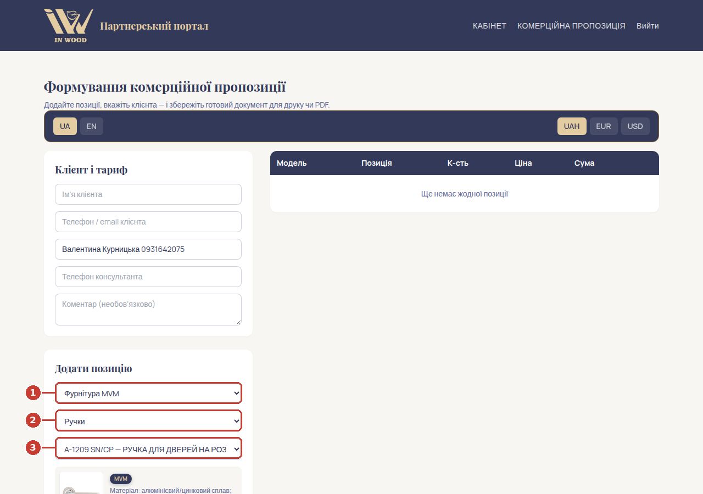
Так само натискаєте «Додати позицію» — готово.
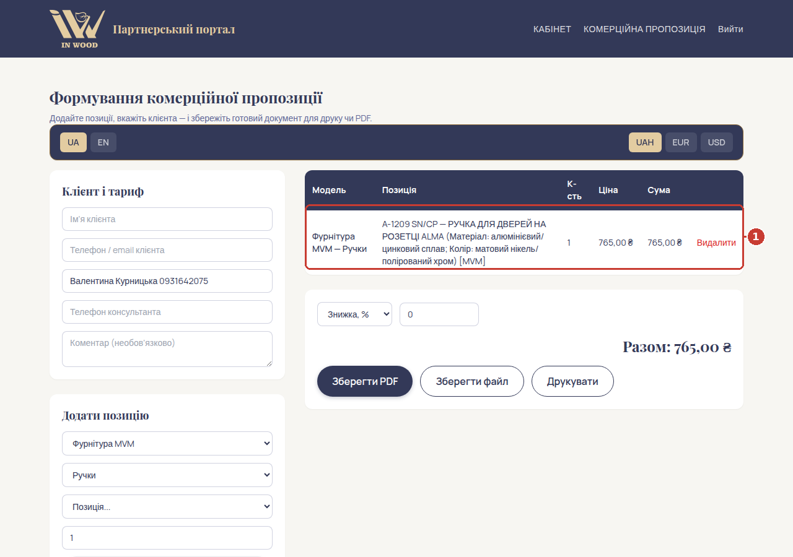
Коротко: що обов'язково заповнювати
Залежно від лінії дверей частина полів може бути обов'язковою, навіть якщо на ціну вона не впливає — без неї кнопка «Додати позицію» лишиться неактивною.
| Поле | Коли обов'язкове |
|---|---|
| Модель | завжди |
| Колір крайки | ETALON / NOMINAL / FREZZATTI / PERFETTO — завжди. У STANDART і прихованих дверей немає. |
| Сторона відкривання | ETALON / NOMINAL / FREZZATTI / PERFETTO / STANDART — завжди. |
| Колір вставки | лише ETALON ET-02…17 і NOMINAL NL-02…05 (на ET-01 і NL-01 — немає). |
| Короб / лиштва лицьова / лиштва тильна / добір | ніколи не обов'язкові — кожне можна лишити «не обрано». |
| Погонажні вироби / фурнітура | обов'язкова лише сама позиція в останньому селекті. |